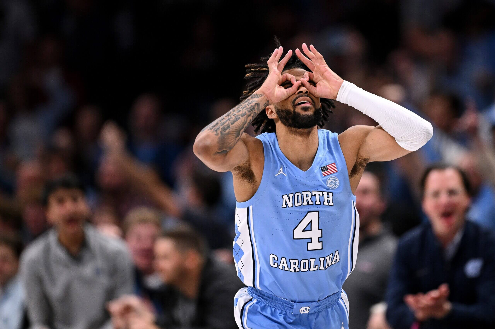

Carolina Basketball: What's next?'
Reflecting on the 2023-2024 season, the University of North Carolina at Chapel Hill's basketball program faces both nostalgia and anticipation.
Despite the bitter loss to Alabama, the return of RJ Davis and Harrison Ingram injects hope for the future.
Departing star Armando Bacot leaves big shoes to fill, but his absence creates opportunities for new talents to shine.
Davis, known for his scoring
prowess and leadership, will be a pivotal figure both on and off the court. Meanwhile, Ingram's versatility adds depth to the team's frontcourt,
bolstering their offensive and defensive capabilities.
The loss to Alabama serves as motivation for the team, driving them to work harder in the offseason. Head Coach Hubert Davis and his staff are
focused on maintaining the program's proud tradition and meeting the high expectations of Tar Heels basketball.
In addition to the returning players, the coaching staff is actively exploring the transfer portal to strengthen the roster. This strategic approach aims
to address any gaps and enhance team depth.
As preparations for the upcoming season intensify, excitement builds within the Tar Heels community
knowing that they could potentially land the number 2 transfer, Maxime Raynaud. Raynaud is a 7'1 center who can stretch the court and knock down
shots, shooting 38% from beyond the arch last year.
With Davis and Ingram leading the charge, the stage is set for another thrilling chapter in the university's basketball history.